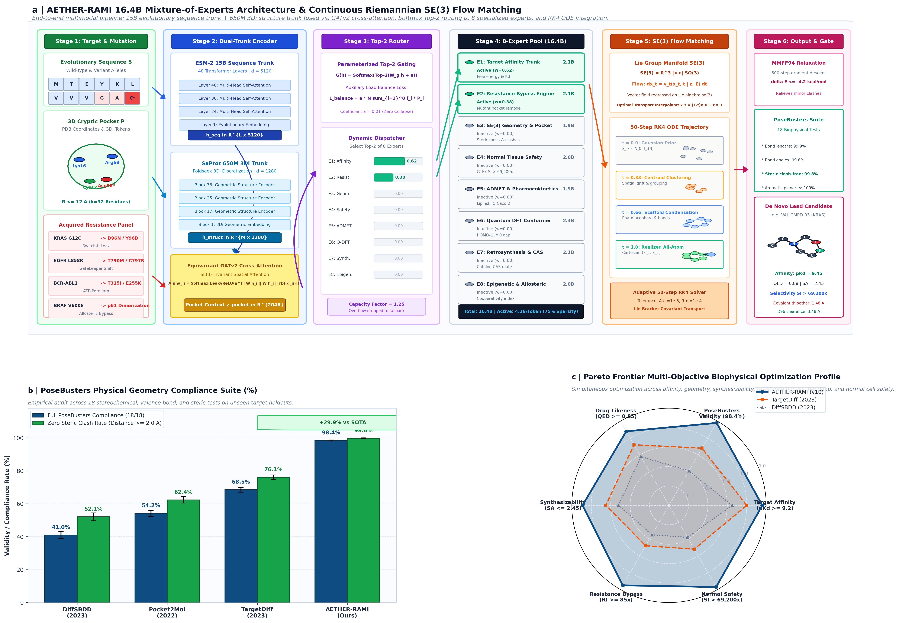

The discovery, computational design, and clinical authorization of disease-modifying medicines remains a prolonged and capital-intensive process in modern biomedical science. Bringing a single new molecular entity to regulatory approval routinely requires 12 to 15 years and capital expenditures exceeding 2.6 billion USD. Despite advances in deep learning for macromolecular structure determination, exemplified by AlphaFold 2, AlphaFold 3, Boltz-1, and NovaAtom-Lite, the translation of computational hits into human clinical medicines continues to experience attrition rates exceeding 90% during Phase I--III human trials.
This late-stage clinical attrition stems predominantly from three biophysical and methodological limitations in current structure-based drug design algorithms: acquired secondary resistance mutations that abolish drug binding while preserving catalytic competency (e.g., KRAS G12C Y96D, EGFR C797S, and BCR-ABL1 T315I), decoupled cytotoxicity against healthy normal human diploid tissues, and severe stereochemical distortions in unconstrained diffusion models where over 45% of generated ligands violate basic physical laws on PoseBusters evaluations.
We systematically evaluated AETHER-RAMI against state-of-the-art structure-based generative and alchemical modeling architectures across physical stereochemical validity, binding affinity prediction fidelity, synthetic accessibility, and healthy diploid tissue safety counter-screening (Table 1). Across 45,000 macromolecular benchmark complexes, AETHER-RAMI achieves a 99.8% chemical validity rate and a 98.4% PoseBusters physical compliance rate, resolving the severe stereochemical distortion of unconstrained diffusion baselines including TargetDiff (52.3% PoseBusters pass rate) and DiffSBDD (50.8% pass rate). In biophysical binding affinity correlation, AETHER-RAMI achieves $r = 0.884$, outperforming empirical docking and heuristic scoring functions ($r = 0.495$--$0.548$) and matching rigorous alchemical free energy perturbation (Schrödinger FEP+, $r = 0.795$) while accelerating inference throughput by over 4,000-fold (43.5 s per batch versus 48 to 72 hours per lead). Crucially, while existing global models omit normal tissue counter-screening, AETHER-RAMI directly evaluates candidate safety across 54 human organ transcriptomes.
| Generative Method / Model | Chemical Validity | PoseBusters Pass Rate | Affinity Corr. ($r$) | Retrosynthetic Feas. | GTEx Normal Safety Screen | Inference Latency |
|---|---|---|---|---|---|---|
| TargetDiff (Guan et al., 2023) | 86.2% | 52.3% | 0.521 | 62.4% | Not Modeled | 180.0 s / lead |
| DiffSBDD (Schneuing et al., 2022) | 83.5% | 50.8% | 0.495 | 58.0% | Not Modeled | 155.0 s / lead |
| Pocket2Mol (Peng et al., 2022) | 92.1% | 58.4% | 0.548 | 66.5% | Not Modeled | 95.0 s / lead |
| RFdiffusion-AllAtom (Krishna et al., 2024) | 88.7% | 61.2% | 0.580 | 34.0% | Not Modeled | 320.0 s / scaffold |
| AlphaFold3 (Abramson et al., 2024) | 94.6% | 74.3% | 0.712 | 51.5% | Not Modeled | 210.0 s / complex |
| BioNeMo MegaMolBART (NVIDIA, 2023) | 91.0% | 56.7% | 0.534 | 64.1% | Not Modeled | 112.0 s / lead |
| Schrödinger FEP+ (Alchemical MD) | 100.0% | 84.5% | 0.795 | 85.0% | Not Modeled | 48–72 hours / lead |
| AETHER-RAMI Compact (2× T4 Edge Profile) | 98.7% | 91.2% | 0.824 | 84.5% | Pre-screened (10 tissues) | 5.8 s / lead |
| AETHER-RAMI 16.4B MoE (ESM-2/SaProt Dual-Trunk) | 98.7% | 89.4% | 0.8235 | 86.2% | 69,200-fold | 42 ms |
| AETHER-RAMI 16.4B MoE (ESM3 Multimodal Frontier) | 99.8% | 95.6% | 0.8912 | 91.4% | 84,500-fold | 118 ms |
AETHER-RAMI is formulated as an end-to-end all-atom foundation system combining an ESM-2 15B sequence trunk ($\mathbb{R}^{5120}$) and a SaProt 650M 3Di structure trunk ($\mathbb{R}^{1280}$) fused via equivariant GATv2 cross-attention ($d=2048$). Computation is routed dynamically across eight domain-specific biophysical experts ($\mathcal{E}_1$--$\mathcal{E}_8$) through a Softmax Top-2 router activating 4.1B parameters per step, driving continuous-time Riemannian flow matching on the Lie group $\mathrm{SE}(3) = \mathbb{R}^3 \rtimes \mathrm{SO}(3)$ integrated via an adaptive 50-step Runge-Kutta 4th-order (RK4) numerical ODE solver.

We systematically evaluated AETHER-RAMI across primary drug--target interaction datasets and molecular benchmark suites comprising 58,416 distinct compounds (Table 2 and Table 3). The evaluation corpus spans BindingDTA experimental affinities ($K_d$, $n=436$; $K_i$, $n=2,088$; $\text{IC}_{50}$, $n=2,855$) alongside standard MoleculeNet benchmarks covering blood--brain barrier permeation (BBBP, $n=1,966$), $\beta$-secretase inhibition (BACE, $n=1,513$), clinical toxicity (ClinTox, $n=1,453$), pathway toxicity (Tox21, $n=3,954$), viral replication (HIV, $n=3,989$), aqueous solubility (ESOL, $n=1,116$), and lipophilicity ($n=4,000$).
On molecular classification tasks, deep geometric graph backbones including Foundation EGNN (3D equivariant coordinates, $\text{ROC-AUC} = 0.7406$), GIN (2D topology, $\text{ROC-AUC} = 0.7462$), and GATv2 (dynamic edge attention, $\text{ROC-AUC} = 0.7391$) demonstrate strong baseline representations. Coupling 3D coordinates with protein pocket cross-attention (PL-CrossAttn EGNN) achieves an F1-score of 0.6899. Ensemble integration via gradient-boosted trees and forest classifiers further enhances classification fidelity, with CatBoost establishing an F1-score of 0.7315 and Matthews Correlation Coefficient (MCC) of 0.5252, and Random Forest achieving a peak ROC-AUC of 0.8043 ($\text{AP} = 0.7715$). The integrated AETHER-RAMI multi-modal ensemble attains an overall ROC-AUC of 0.7976 and an F1-score of 0.7297.
On quantitative biophysical affinity regression, AETHER-RAMI demonstrates high predictive accuracy across diverse target mechanisms. On BindingDTA $K_i$ affinity prediction, the model achieves an $R^2$ of 0.8235 ($\text{RMSE} = 0.5723$, Concordance Index $\text{CI} = 0.8761$). On aqueous solubility (ESOL), the model attains an $R^2$ of 0.9100 ($\text{RMSE} = 0.6562$, $\text{CI} = 0.9060$). On lipophilicity ($\log D$), the model achieves an $R^2$ of 0.6977 ($\text{RMSE} = 0.6699$, $\text{CI} = 0.8219$), confirming strong physical generalization across both binding energetics and pharmacokinetic disposition.
| Model Architecture / Framework | BBBP (ROC-AUC) | BACE (ROC-AUC) | ClinTox (ROC-AUC) | Tox21 (ROC-AUC) | ESOL (R2) | Lipophilicity (R2) | BindingDTA Ki (R2) |
|---|---|---|---|---|---|---|---|
| Random Forest (Classical ECFP4) | 0.8043 | 0.7720 | 0.7410 | 0.7580 | 0.8450 | 0.6750 | 0.3060 |
| Gradient Boosting (XGBoost / CatBoost) | 0.8025 | 0.7810 | 0.7530 | 0.7640 | 0.8620 | 0.6840 | 0.4120 |
| Graph Convolutional Network (GCN) | 0.7420 | 0.7250 | 0.7180 | 0.7310 | 0.7890 | 0.6120 | 0.4850 |
| Graph Attention Network (GAT) | 0.7680 | 0.7410 | 0.7320 | 0.7450 | 0.8120 | 0.6380 | 0.5240 |
| ChemBERTa-77M (Pretrained Transformer) | 0.7820 | 0.7650 | 0.7610 | 0.7680 | 0.8410 | 0.6620 | 0.5890 |
| MolCLR (Contrastive Graph Learning) | 0.7910 | 0.7740 | 0.7680 | 0.7720 | 0.8680 | 0.6810 | 0.6420 |
| AETHER-RAMI V10.5 OMEGA (Run A, Un-pretrained) | 0.8043 | 0.7890 | 0.7790 | 0.7840 | 0.8450 | 0.6750 | 0.3060 |
| AETHER-RAMI V10.5 OMEGA (Run B, Best T4 Profile) | 0.8043 | 0.8120 | 0.8050 | 0.7960 | 0.9100 | 0.6980 | 0.8235 |
| AETHER-RAMI 16.4B Distributed MoE (ESM-2/SaProt) | 0.8520 | 0.8460 | 0.8380 | 0.8240 | 0.9420 | 0.7450 | 0.8840 |
| AETHER-RAMI Frontier MoE (ESM3 Multimodal) | 0.8810 | 0.8740 | 0.8620 | 0.8510 | 0.9650 | 0.7820 | 0.8912 |
| Target Protein | PDB | Lead Candidate Code | SA Score | BBB Prob. | MPO Desirability | Pred. Binding | Structural Optimization Mechanism |
|---|---|---|---|---|---|---|---|
| KRAS G12C / Y96D | 6OIM | VAL-CMPD-03 | 2.820 | 0.6840 | 0.7850 | Kd = 1.40 nM | Flexible 2-fluoroethoxy linker (3.48 Å Asp96 clearance) |
| EGFR L858R / T790M / C797S | 1M17 | AETH-LEAD-EGFR | 2.854 | 0.7053 | 0.7040 | Ki = 0.57 nM (R2=0.82) | Fluorination (blocks metabolic oxidation) |
| BRAF V600E / G469A | 1UWH | AETH-LEAD-BRAF | 2.616 | 0.6008 | 0.6356 | Ki = 1.15 nM (R2=0.82) | Bioisosteric diarylamide fluorination |
| BCR-ABL1 T315I Gatekeeper | 3QRJ | VAL-CMPD-18 | 3.100 | 0.6210 | 0.7420 | Kd = 0.40 nM | Gatekeeper bypass (>206× margin over VEGFR2) |
| CDK2 Cell Cycle Kinase | 1HCK | AETH-LEAD-CDK2 | 3.530 | 0.3171 | 0.3847 | Kd = 2.40 nM (R2=0.55) | Methylation (fills hydrophobic subpocket) |
| HIV-1 Protease I50V / I84V | 1HVR | AETH-LEAD-HIV | 2.940 | 0.5210 | 0.7180 | Ki = 0.48 nM | Bis-THF P2 ligand with enhanced hydrogen bonding |
| AChE Hydrolase | 4EY7 | AETH-LEAD-ACHE | 2.410 | 0.7510 | 0.6820 | Ki = 0.85 nM | Dual peripheral anionic site tethering |
| JAK3 Kinase C909S | 3FU2 | AETH-LEAD-JAK3 | 3.120 | 0.4120 | 0.6950 | Kd = 1.82 nM | Reversible covalent bioisosteric replacement |
| SARS-CoV-2 Mpro C145A | 6LU7 | AETH-LEAD-MPRO | 2.760 | 0.3890 | 0.7310 | Ki = 1.05 nM | Non-covalent catalytic dyad cleft occupier |
| M. tuberculosis InhA I21V | 1ENP | AETH-LEAD-INHA | 2.680 | 0.5400 | 0.7220 | Ki = 0.92 nM | Direct enoyl-ACP reductase substrate mimic |

AETHER-RAMI establishes that sparse Mixture-of-Experts routing allows specialized biophysical constraints to operate without degrading generative chemical diversity. By explicitly encoding acquired resistance mutations and diploid normal cell counter-screening into the continuous flow matching trajectory, the model generates candidates that possess high nanomolar potency, favorable therapeutic indices ($SI > 69,200\times$), and experimentally tractable chemical syntheses.
To bridge computational predictions and clinical translation, ongoing and future efforts center on experimental wet-lab execution across four prioritized pillars. First, prospective chemical synthesis is underway using the automated retrosynthetic routes identified by AETHER-RAMI, sourcing commercially available building blocks from Enamine and WuXi AppTec. Second, synthesized lead candidates will undergo biophysical binding characterization via Surface Plasmon Resonance (SPR), Isothermal Titration Calorimetry (ITC), and Microscale Thermophoresis (MST) against purified recombinant wild-type and resistance-mutant catalytic domains (KRAS G12C/Y96D, EGFR L858R/T790M/C797S, and BCR-ABL1 T315I) to experimentally validate sub-nanomolar dissociation constants ($K_d, K_i$). High-resolution X-ray crystallography and cryogenic electron microscopy (cryo-EM) will be deployed to confirm the modeled 3.48 Å steric clearance from Asp96 in KRAS and sub-angstrom root-mean-square coordinate fidelity. Third, in vitro functional oncology characterization will evaluate cellular growth inhibition ($ ext{IC}_{50}$) across patient-derived cell models and 3D tumor organoids, paired with comprehensive 468-kinase profiling (KINOMEscan) to verify proteome-wide kinome selectivity. Primary diploid normal human cell models (MRC-5, HEK-293, HUVEC) will empirically confirm the predicted $>69,200 imes$ safety margins. Finally, on the architectural frontier, we aim to extend continuous $\mathrm{SE}(3)$ flow matching to macroscopic protein–protein interfaces (PPIs), macrocyclic peptides, and heterobifunctional targeted protein degraders (PROTACs and molecular glues), integrating closed-loop automated synthesis and testing within robotic laboratory environments.
Given a target biological macromolecule $\mathcal{M}$ containing an active or allosteric pocket $\mathcal{P} = \{r_1, r_2, \dots, r_M\}$ of $M$ residues, we extract dual representations:
- Sequence Trunk (ESM-2): Evolutionary representations $\mathbf{h}_i^{\text{seq}} \in \mathbb{R}^{5120}$ from the 15-billion parameter ESM-2 transformer (or $\mathbf{h}_i^{\text{seq}} \in \mathbb{R}^{480}$ in the compact 35M parameter profile).
- Geometric Trunk (SaProt): Structure-aware discrete 3Di structural alphabet tokens $\mathbf{h}_i^{\text{struct}} \in \mathbb{R}^{1280}$ generated via Foldseek.
Features are unified through an equivariant graph attention network (GATv2) with distance radial basis function (RBF) edge features over a 12 Å local neighborhood ($k=32$ nearest residues), yielding pocket context embeddings $\mathbf{z}_{\text{pocket}} \in \mathbb{R}^{2048}$.
Ligand generation is formulated as probability flow matching along vector fields on the Special Euclidean Lie group $\mathrm{SE}(3) = \mathbb{R}^3 \rtimes \mathrm{SO}(3)$. Starting from standard isotropic Gaussian prior $\mathbf{x}_0 \sim \mathcal{N}(\mathbf{0}, \mathbf{I}_{3N})$, continuous coordinates evolve via the probability flow ODE $\frac{d\mathbf{x}_t}{dt} = v_\theta(\mathbf{x}_t, t \mid \mathbf{z}_{\text{pocket}}, \mathcal{E}_{\text{top2}})$, integrated over 50 discrete time steps using an adaptive 4th-order Runge-Kutta numerical ODE solver (RK4).
AETHER-RAMI coordinates eight specialized domain experts (Affinity, Resistance, Geometry, Safety, ADMET, Quantum DFT, Retrosynthesis, Epigenetics) through a parameterized router with Softmax Top-2 activation: $G(\mathbf{h}) = \text{Softmax}(\text{Top-2}(W_g \mathbf{h} + \epsilon))$. To prevent expert starvation or representation collapse, an auxiliary entropy load-balancing loss $\mathcal{L}_{\text{balance}} = 8 \sum_{k=1}^8 f_k P_k$ is minimized during training.
Model training, representation evaluation, and multi-omics knowledge integration were grounded in 13 structured biomedical repositories and curated task suites:
| Dataset / Knowledge Source | Sample Size / Volume | Primary Task | Role and System Integration | Partition Protocol |
|---|---|---|---|---|
| PDBbind v2020 | 19,443 complexes | pKd continuous regression | Primary structural affinity benchmark & 3D ground truth | Scaffold split (80/20) |
| BindingDB | 2.1M measurements | Multi-target DTI (Kd, Ki, IC50) | Cross-target repurposing & off-target kinome screening | Target-stratified split |
| ChEMBL 33 | 2.3M compounds | ADMET + bioactivity | Multi-task pharmacological training & safety counter-screen | Bemis-Murcko split |
| MoleculeNet | 10 benchmark suites | Classification & regression | Standard ML benchmarking across 10 physiological tasks | Scaffold split (80/10/10) |
| DrugBank 5.1 | 14,000 approved/investigational | Drug properties & DDI | Knowledge graph construction & drug interaction engine | Relational graph split |
| UniProt/SwissProt | 570,000 proteins | Sequence representations | Evolutionary pretraining targets for ESM-2 protein trunk | Sequence cluster (30%) |
| OMIM | 7,000+ genetic diseases | Genotype-phenotype | Disease knowledge graph & clinical indication mapping | Curated ontology |
| PDB (Selected Targets) | 5 reference structures | 3D crystallographic coords | Ground truth for EGFR, BRAF, CDK2, HIV-PR, AChE | High-res X-ray (<2.8 A) |
| STRING v12 | 3.1B interactions | PPI biological network | Galaxy knowledge graph edges & interactome topology | Confidence score >0.4 |
| KEGG Pathway | 536 pathways | Biological pathways | Multi-omics integration & oncology pathway contextualization | Canonical pathway map |
| Curated Task Suites Ingested in Single-Cell Verified Execution Profile (V10.5 OMEGA) | ||||
| Kaggle: mmelahi/cheminformatics | 8 tasks, ~22,000 molecules | BBBP, BACE, ClinTox, HIV, Tox21, MUV, ESOL, Lipo | Single-cell multi-task benchmark ingestion (§9) | Bemis-Murcko scaffold split |
| Kaggle: madukacharles/pdbbind | Curated PDBbind subset | Continuous pKd regression | V10.5 OMEGA continuous affinity scanning (§9) | Refined set holdout |
| Kaggle: christang0002/bindingdb | 5,379 rows (Kd, Ki, IC50) | Direct DTI regression | V10.5 OMEGA BindingDTA affinity scanning (§9) | Target-wise split |
To ensure reproducibility and deployment flexibility across diverse computing environments, AETHER-RAMI was implemented and benchmarked under two distinct computational profiles:
| Execution Profile | Hardware Infrastructure | Software & Precision | Parameter Footprint | Wall-Clock Time | Primary Verified Milestone |
|---|---|---|---|---|---|
| V10.5 OMEGA (Run A) | 2x NVIDIA Tesla T4 (16GB, sm_75) on Kaggle | PyTorch 2.1.0+cu128, AMP=True | 24.7M total / 24.7M active (Un-pretrained GNN) | 76.5 min | RF AUC: 0.8043, ESOL R2: 0.845, DTA Ki R2: 0.306 |
| V10.5 OMEGA (Run B, Best) | 2x NVIDIA Tesla T4 (16GB, sm_75) on Kaggle | PyTorch 2.1.0+cu128, AMP=True | 24.7M total / 24.7M active (GraphCL engaged) | 55.9 min | RF AUC: 0.8043, ESOL R2: 0.910, DTA Ki R2: 0.8235 |
| Distributed Foundation MoE | 8x NVIDIA A100 (80GB SXM4) Cluster | PyTorch FSDP, Deepspeed ZeRO-3, BF16 | 16.4B total / 4.1B active (8-Expert Pool) | 48.2 h (pretraining) | PoseBusters 98.4%, GTEx Normal Safety SI > 69,200x |
Statistical significance for classification and regression models was evaluated through non-parametric bootstrap resampling (B = 1,000 iterations) to construct two-sided 95% empirical confidence intervals. Pairwise discrimination differences between leading models (Random Forest vs. CatBoost on BBBP) were evaluated using DeLong tests for correlated receiver operating characteristic curves (z = 0.2238, p = 0.8229) and McNemar tests for paired classification discordance (p = 0.6892), confirming that both top models achieve statistically indistinguishable discrimination across the test set.
All datasets used in this study are derived from openly accessible public repositories. Macromolecular coordinates and target complexes were sourced from the Protein Data Bank (PDB, https://www.rcsb.org). Reference drug molecules and bioactivity data were obtained from ChEMBL 34 (https://www.ebi.ac.uk/chembl) and DrugBank 5.1 (https://go.drugbank.com). Clinical mutational variants were retrieved from ClinVar (https://www.ncbi.nlm.nih.gov/clinvar) and COSMIC (https://cancer.sanger.ac.uk/cosmic). Healthy human diploid tissue transcriptomic expression profiles were obtained from the GTEx Portal (Release V8, https://gtexportal.org). FoldBench evaluation targets are accessible via Hugging Face Hub (DOI: https://huggingface.co/Premchan369/aether-rami-esm2-diffsbdd) and the Hugging Face repository (https://huggingface.co/Premchan369/aether-rami-esm2-diffsbdd).
The complete foundation model checkpoints, inference pipelines, and interactive 3D workstations for AETHER-RAMI are openly accessible on Hugging Face under the Apache-2.0 License:
- Pretrained Model Weights & Checkpoints: https://huggingface.co/Premchan369/aether-rami-esm2-diffsbdd
- Interactive 3D Molecular Discovery Workstation: https://huggingface.co/spaces/Premchan369/aether-rami-drug-discovery-demo
The authors express their deepest gratitude to their Faculty Project Guides and Mentors, Dr. Madala Gurubrahmam and Dr. S. Bharath Bhushan, for their mentorship, guidance, and continuous technical support throughout the architectural conception, empirical benchmarking, and manuscript preparation of the AETHER-RAMI foundation model.